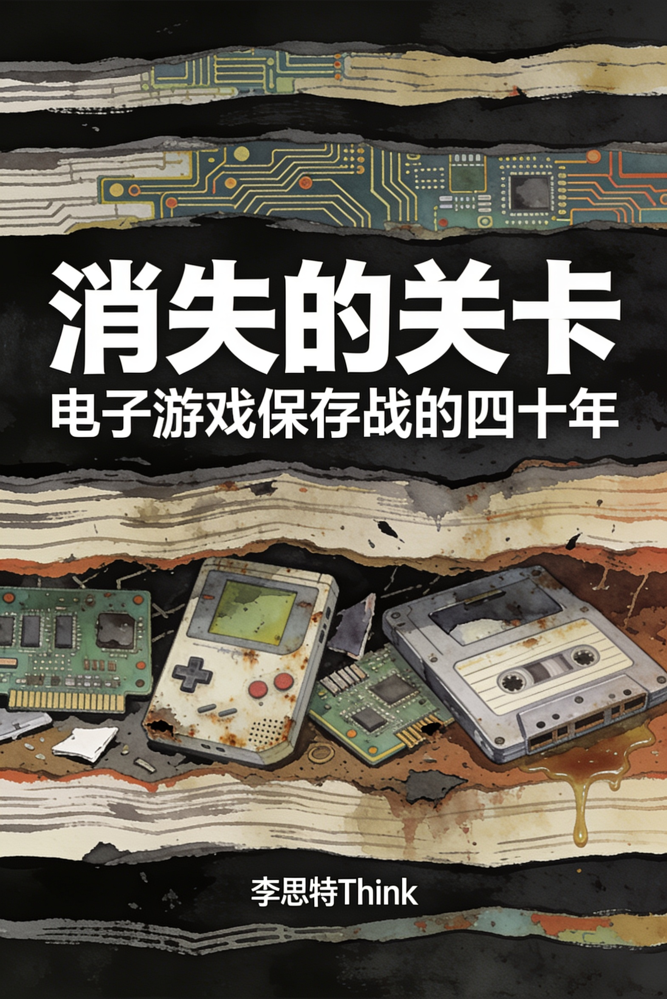
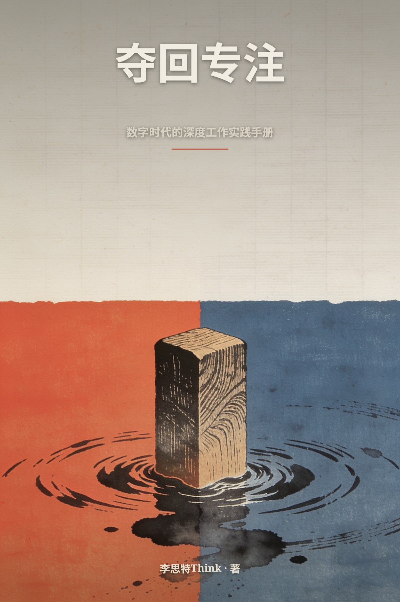
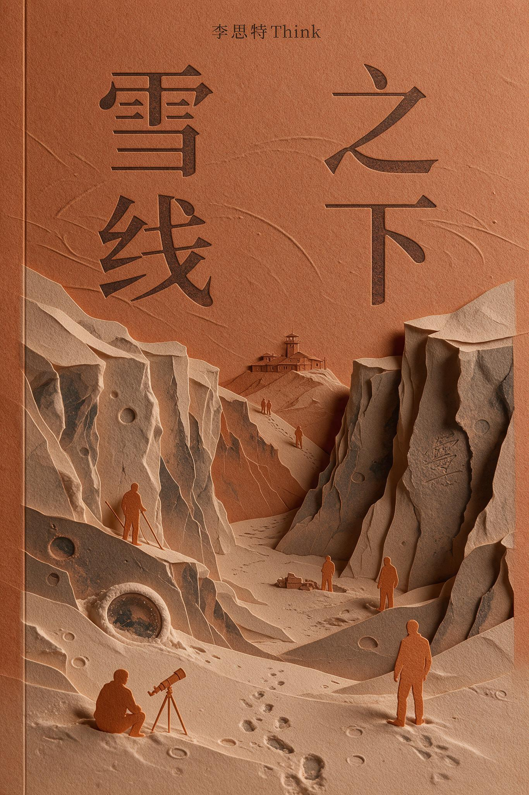

继续阅读
大家都在看
推荐阅读 · 按评分与新度挑选榜单

书友划线
来自读者的真实划线与想法分类
查看全部 · 14 个分类搜索结果
全部作品

Seventy-Two Hours: Chernobyl Before the World Knew

The Marathon of 1908: The Race That Invented Modern Sport

Aisle Nine: The Store That Taught the World to Shop

The Night Shift: What Your Brain Does While You Sleep

The Cold Truth: Why Ice Floats and Other Miracles of Water

Six Ways to Fall: A Natural History of Gravity

The Alphabet of Life: How Four Letters Write Every Living Thing

The Emperor of the United States: The Gloriously True Story of Norton I

Sweet Empire: How Sugar Built and Broke the Modern World

The Rubber Century: How a Tree Sap Wired the Modern World

Small Levers: The Engineering of Everyday Change

Rated M
8.6为什么8×8像素块能承载人格？为何手绘逐帧动画至今无法被算法复刻？当显存与多边形预算不再是枷锁，画面反而陷入同质化的泥沼。这不是画质进化论，而是一部在硬件约束下反复重新发明“观看”开始阅读
从像素到光追
8.62009年，斯德哥尔摩一间公寓里诞生的业余代码，意外构筑了数亿儿童的第一个社会空间。从红石电路意外成为编程启蒙，到服务器里自发诞生的儿童宪法；从微软二十五亿美元的收购算盘，到土耳其开始阅读
方块世界
8.2为了省下0.1秒，有人对着同一面墙壁练习了十六年；一段被遗忘的录像带，藏着电子游戏最隐秘的史前史。这不是关于通关的攻略，而是一群极致玩家拆解规则系统的实录。从《毁灭战士》的早期磁带开始阅读
把游戏拆开的人

The Server Is a Country

The Pocket Wars

消失的关卡
8.81997年金融风暴后的废墟上，每小时一千韩元的PC房意外接通了国家宽带，催生出全球首个成熟的网游帝国。从《天堂》攻城战里诞生的公会政治，到兵营制度下被压缩的职业选手青春，再到假赛丑开始阅读
网吧、兵营与冠军
8.8从上海交大宿舍到全球现象级产品，三位创始人用十年完成了一场从模仿到定义的豪赌。他们押注自研引擎与全平台同步，在《崩坏3》盈利巅峰时抽调核心团队奔赴无人看好的开放世界，让二次元从亚文开始阅读
原神纪元

夺回专注：数字时代的深度工作实践手册
8.21980年代，王安实验室市值高达56亿美元，是当时全球华人商业成就的巅峰。这位从上海交大到哈佛应用物理实验室的工程师，曾凭磁芯存储器专利从IBM手中换取第一桶金，又靠文字处理机在蓝开始阅读
王安：华人计算机帝国的崛起与崩塌
8.6一盏匿名的残破走马灯，一张祖母从未提及的老照片，将灯彩非遗传承人纪云灯拖入三十年前的谜局。订单委托人沈既明，一位沉默的古建修复师，带着他过往的伤痕与她并肩复原这盏旧灯。在灯骨与绢帛开始阅读
落灯记
